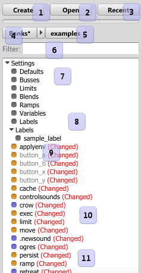

|
Navigator |
|
The navigator is where assets are managed from.

- Create new assets in to the current selected folder.
- Open a bank. You can also open a bank by dragging it from explorer to the asset list.
- Open a recently opened bank.
- Clears the current path (makes it so everything is visible again), and if starred, there are changes in the open banks. When an
asset is deleted, this is the only place the change notification is visible!
- The current path. Click an arrow to move to another folder. Click the folder name to get the right click menu for that folder.
- Filter the current list of assets by name, using wildcards.
- The settings for the current project. See Settings.
- Under the "Labels" tree node are all labels created for your game. They are listed here so you can drag events to them to automatically add the label to any Start Sound event steps contained within. Note that existing labels are not replaced!
- A read only asset, drawn with gray text.
- Sounds can have a period (".") in front of them to indicate that they are not ready to audition. Click the sound to see why in the status field. Generally this is because the sound either has no source file, or is compressing in the background.
- Assets that have been changed, are unsaved, or were an older version on load are marked as "Changed". Sounds that have been loaded and need to recompress will be marked as Changed until the
source has been loaded and verified as the same.
 Bank Reference
Bank Reference Miles Studio Reference
Miles Studio Reference Timeline
Timeline